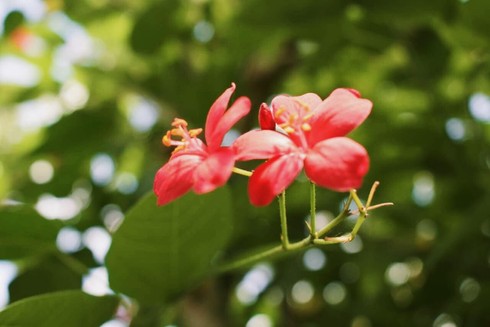
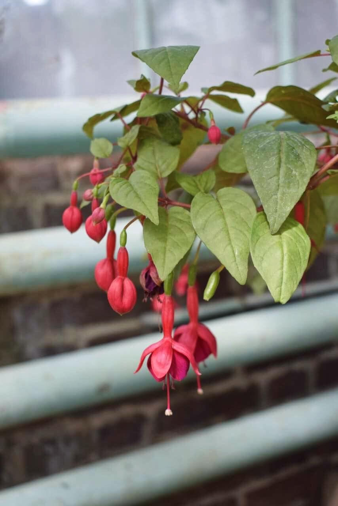
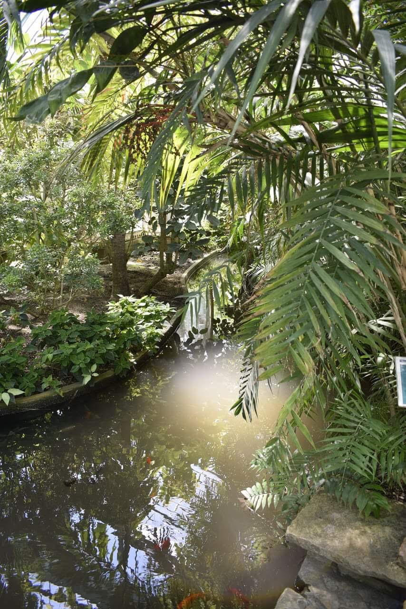
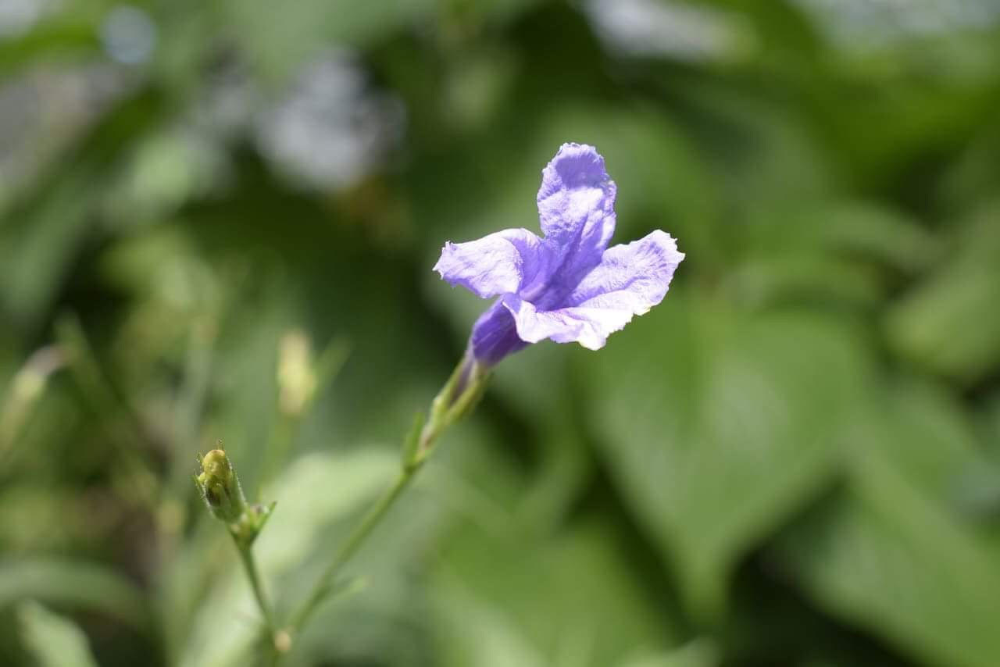
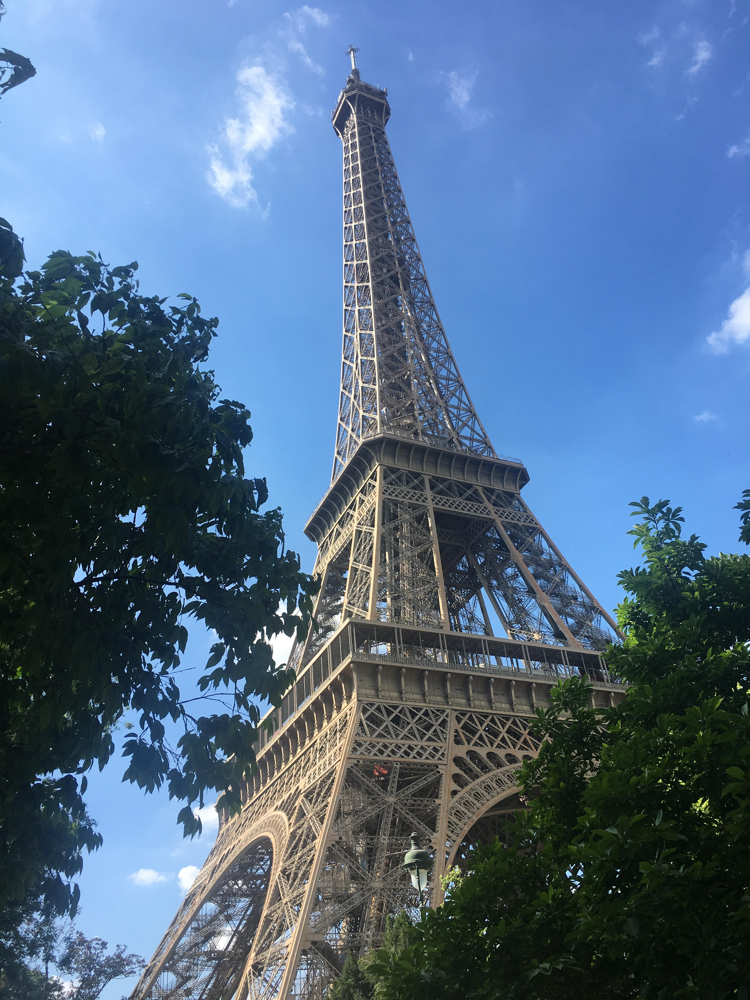
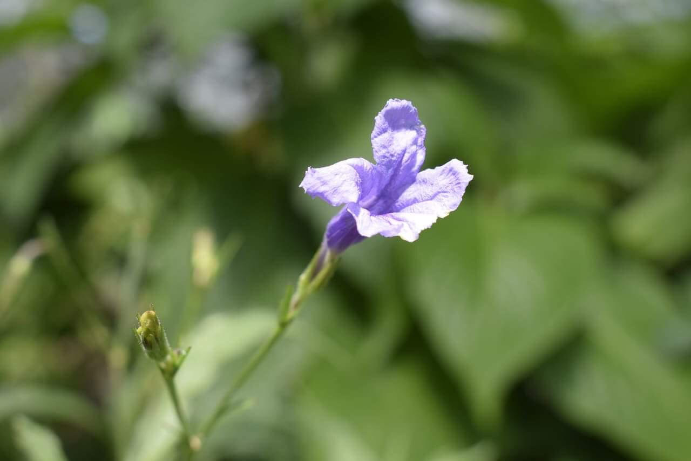
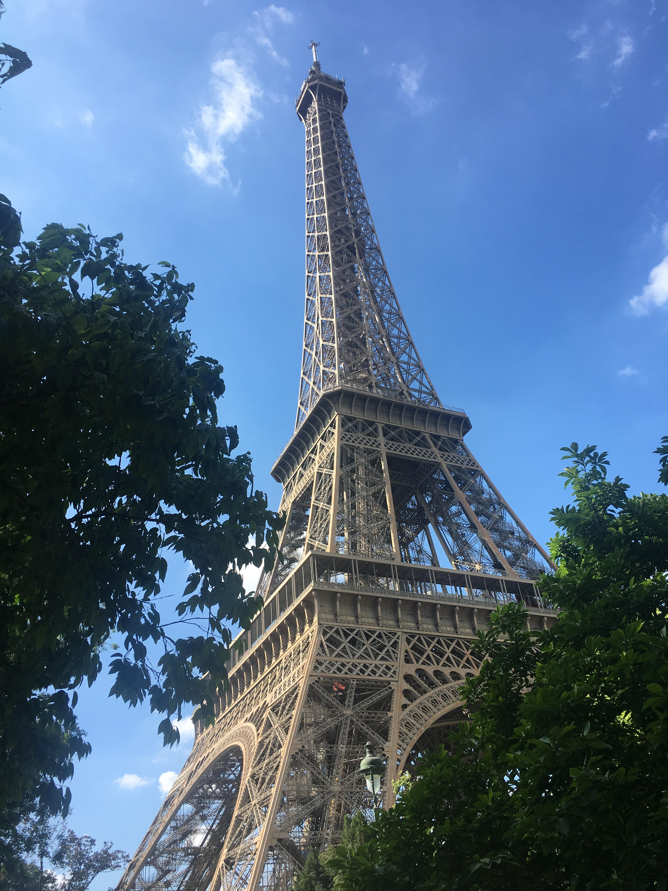
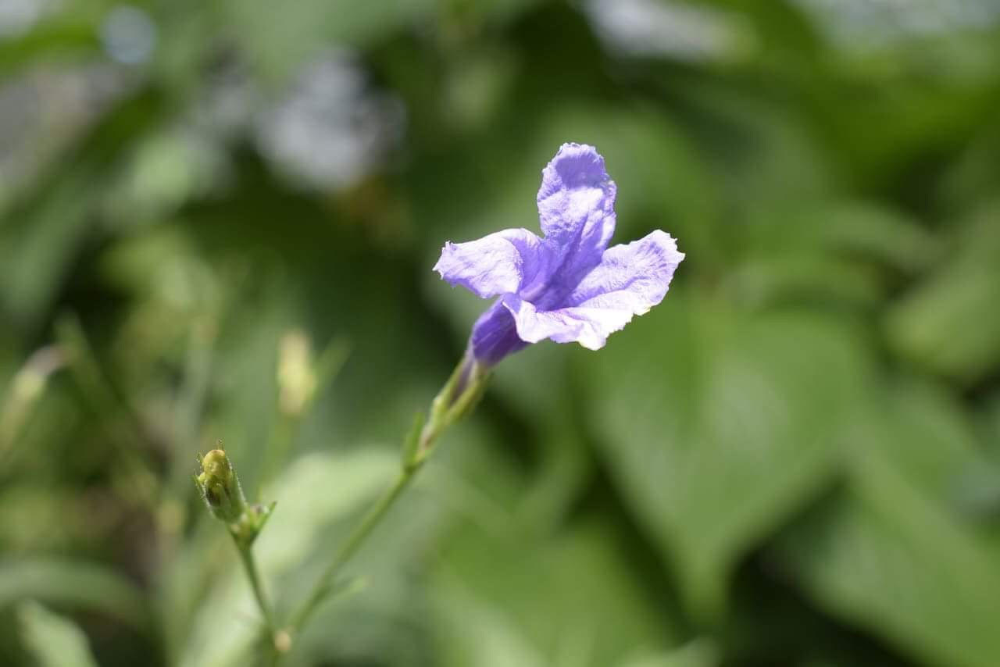
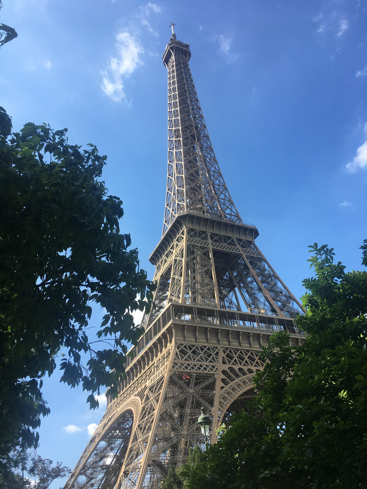

 





One of my favourite places to go is the small village of Mijas,
located on the side of a mountain in Malaga (Spain.)
Mijas is a small town located in the Costa del Sol.
The small town is very popular tourist attraction and has a gorgeous view of the sea and surrounding towns.
One of my favourite things to do is to go to the little café located on the very edge of the view and
sit in the roasting sun, watching everyone go by.
Mijas is my little quiet safe haven away from the busy crazy bustling everyday world.
Last summer I travelled to Paris with two of my close friends. We stayed on the edge of
Paris and spent 8 days in France.
One of the highlights of our trip for me, was our day trip to Disneyland Paris.
The background image is a photo we took while at Disneyland and is one of my favourite photos I've ever taken while travelling.
While we were away, we visited a garden called "Jardin des Serres d’Auteuil."
The garden was created in 1761.
The botanical garden has many large greenhouses and is a popular spot for photographers.
Click here to visit the Garden's Website
During August 2018 I travelled to London.
During my trip I went to the Warner Brother Studios where I spent a day at the Harry Potter Film Set Exhibition.
I spent hours on the sets, taking photos and learning new found trivia about my favourite franchise.
I had always wanted to visit the studio as I am a long time fan of the movies and the books.
The studios first opened the tour back in 2012 and has been a large tourist attraction ever since.
Many of the crew and cast regularly visit the sets so there's always a chance you might see someone you recognise!
Click here to visit Studio's Official Website

